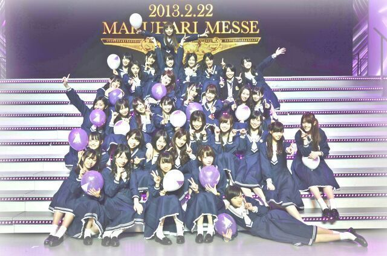

ほっほーーーい＼(^o^)／
ろってぃーです 。
昨日、金曜日は無事に
liveを終えることができましたww
大成功ぢゃーーーー ! !
もう、最高に楽しかった。
楽しかったー
楽しかったー
わーいわーい (*´∇｀*)てへ
...
今どんなきもち??
...
「言葉にできない。」
ってな位、
気持ちよかったよ(・ω・)
今回のliveは、
持ち歌全てやりました !
そして アンダー楽曲の新曲、
『13日の金曜日』を初披露☆
させて頂きました (*´▽`*)/
昨日は22日の金曜日やったけどな。
あ、ごめんなさい
しょーもないこと言ってしもた(^^)
13日の金曜日♪どうやったかな??
新曲♪、皆の感想聞きたいなん(^^)♪
liveに来れなかった皆さんの前でも
早くパフォーマンスしたいなん(*´ω`*)
あと、
『優しさならまだ間に合ってる』の
れなりんのパートをやらせて頂きました。
初めてだったから、
緊張したぉ。
メイクとかはさ本番前にするから、
朝 家出る前は、
歯磨きと洗顔するだけやのに
前日から気合い入りすぎて
家出る2時間前に目覚まし
設定してもーた (*^^*)
ほんなら
目覚ましなる10分前に目覚めて
2時間しか寝てないのに
起きた瞬間目パッチリん !
ベッドから飛び起きて、
朝ご飯もしっかり
ちゃんと食べて気合い入れて、
朝からずっとliveのポジションや
段取りの確認してました(/・▽・)/
本当、皆も言ってくれるけど
やっぱliveが1番だお(((・ω・)
大好き。
あっ、そーだ☆
このlive後に撮った集合写真,
まひろどこにいるか分かるかい?
どっかで羽ばたいてるよ /

本当に皆 ありがとうっ !